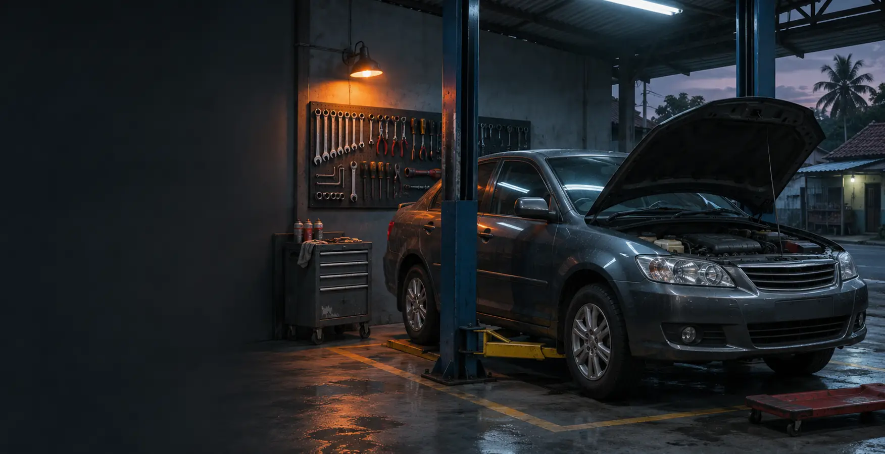

Bengkel mobil · Jetis, Kabupaten Mojokerto
Servis mobil
di Jetis, Mojokerto.
Mobil terasa tidak enak, lampu indikator menyala, atau sudah waktunya servis berkala? Datang ke TOBY-AUTO di Jl. Raya Jetis dan ceritakan keluhannya.
Layanan
Yang bisa dikerjakan untuk mobil Anda
- 01
Servis berkala
Ganti oli dan filter, cek cairan, dan pemeriksaan rutin supaya mobil tetap sehat sesuai jadwal servis.
- 02
Rem
Pengecekan kampas, cakram, dan minyak rem bila rem terasa kurang pakem atau berbunyi.
- 03
Mesin dan tune up
Pemeriksaan tenaga mesin, suara tidak wajar, dan pembakaran supaya mesin berjalan halus.
- 04
AC mobil
Cek AC yang kurang dingin: freon, kompresor, dan kebersihan saluran.
- 05
Kelistrikan dan aki
Aki lemah, lampu, dan masalah kelistrikan yang membuat mobil susah menyala.
- 06
Kaki-kaki dan suspensi
Mobil bergetar, bunyi saat melewati jalan rusak, atau setir terasa tidak stabil.
Cara datang
Sebelum datang ke bengkel
Catat keluhannya
Kapan masalah muncul, bunyi seperti apa, dan apakah lampu indikator menyala. Cerita yang jelas membantu mekanik.
Cari lokasinya
Bengkel ada di Jl. Raya Jetis - Wringinanom, Kecamatan Jetis. Pakai tombol Google Maps untuk petunjuk arah.
Tanyakan estimasi
Tanyakan perkiraan pekerjaan dan biaya sebelum mobil dikerjakan, supaya tidak ada kejutan.
FAQ
Yang sering ditanyakan
Di mana lokasi TOBY-AUTO?
Jl. Raya Jetis - Wringinanom, RT.1/RW.6, Pasinan Wetan, Kupang, Kec. Jetis, Kabupaten Mojokerto, Jawa Timur 61352.
Jam buka bengkel?
Cek jam buka terbaru di Google Maps atau hubungi bengkel sebelum datang.
Apakah harus janji dulu?
Sebaiknya hubungi bengkel lebih dulu supaya mobil Anda bisa ditangani tanpa menunggu lama.
Merek mobil apa yang bisa dilayani?
Tanyakan langsung ke bengkel untuk merek dan tipe mobil Anda sebelum datang.
Berapa biaya servis?
Biaya tergantung jenis pekerjaan dan suku cadang. Minta estimasi sebelum pekerjaan dimulai.